软件工程与设计模式相关，Spring简介
软件工程与设计模式相关，Spring简介
1.编程思想
1.1 面向过程编程
面向过程编程（Procedural Programming）是一种以过程为中心的编程风格。在面向过程编程中，程序被分解为一系列的函数或过程，每个函数执行特定的任务。这种编程风格强调按照一定的顺序执行一系列步骤来解决问题。函数可以接受输入参数并返回输出结果。数据通常是通过参数传递给函数，而函数之间的通信是通过函数调用来实现。
优
- 直接、简单，易于学习和理解，尤其适合初学者。
- 可以提供较高的执行效率，因为它避免了面向对象编程中的一些额外开销。
- 更容易进行代码调试和测试，因为函数之间的依赖关系相对简单。
- 性能相较于面向对象，较好。
缺
- 随着项目规模的增大，代码可能变得难以维护和扩展。函数之间的依赖关系可能变得复杂，代码可读性可能下降。
- 全局变量的使用可能导致命名冲突和不可预测的副作用。
- 面向过程编程缺乏一些面向对象编程的高级特性，如封装、继承和多态，这些特性可以提高代码的组织性和重用性。
1.2 面向对象编程
面向对象(Object Oriented)是软件开发方法，一种编程范式。对现实世界抽象，将属性（数据）、行为（操作数据的函数或方法）封装成类。
优
- 提供了更好的组织性和可维护性，通过对象的封装、继承和多态等概念，使得程序更易于理解、扩展和重用。
- 支持代码的模块化开发，不同对象之间的耦合性较低，使得团队合作更加容易。
- 可以通过继承和多态实现代码的灵活性和可扩展性。
缺
- 面向对象编程的学习曲线相对较陡峭，对初学者来说可能需要更多的时间和精力来理解和掌握相关概念。
- 面向对象编程中的一些高级特性和设计模式可能会导致额外的开销和复杂性。
- 在某些情况下，面向对象编程可能会导致性能下降，尤其是当不恰当地使用继承和多态时。
1.2.1 面向对象编程三大特征
封装
通常认为封装是把数据和操作数据的方法封装起来，对数据的访问只能通过已定义的接口。
继承
继承是从已有类得到继承信息创建新类的过程。提供继承信息的类被称为父类（超类 /基类），得到继承信息的被称为子类（派生类）。
多态
分为编译时多态（方法重载）和运行时多态（方法重写）。要实现多态需要做两件事：⼀是子类继承父类并重写父类中的方法，⼆是用父类型引用子类型对象，这样同样的引用调用同样的方法就会根据子类对象的不同而表现出不同的行为。
方法重载 vs 方法重写
方法重载（Overload）发生在编译阶段，表现为在同一类中编写多个名称相同但参数不同的方法。方法重写（Override）发生在运行时，表现为父子类中同时编写多个名称、参数相同的方法。在运行时调用不同子类的不同的方法。
以JAVA语言为例，多态的实现利用运行时类型判定（RTTI）技术，它的作用是在我们不知道某个对象的确切的类型信息时（即某个对象是哪个类的实例），可以通过 RTTI 相关的机制帮助我们在编译时获取对象的类型信息。ps.此部分详细解释移步jvm.md。
面向过程编程 vs 面向对象编程
面向对象是⼀种基于面向过程的编程思想，是向现实世界模型的自然延伸，这是⼀种“ 万物皆对象”的编程思想。由执行者变为指挥者，在现实⽣活中的任何物体都可以归为⼀类事物，而每⼀个个体都是⼀类事物的实例。面向对象的编程是以对象为中心，以消息为驱动。
区别
组织方式：面向过程编程以函数为基本单位，按照一定的顺序和步骤解决问题；而面向对象编程以对象为基本单位，通过对象的属性和方法来解决问题，更强调数据和行为的封装。
数据处理：面向过程编程通常以过程为中心，通过处理数据来达到目标；而面向对象编程则将数据和相关的操作封装在对象中，通过对象之间的交互来处理数据。
代码复用：面向过程编程侧重于函数的重用，而面向对象编程侧重于对象的重用，通过继承、多态等机制实现代码的复用和扩展。
抽象和封装：面向对象编程具有更高的抽象能力，能够将真实世界的概念映射到程序设计中，通过类和对象的封装来表示问题领域的模型。
1.3 面向切面编程
面向切面编程（AOP）是一种软件开发范式，旨在通过横切关注点（cross-cutting concerns）的方式来解耦系统中的各个模块。横切关注点指的是那些不属于业务逻辑本身，但是会影响多个模块的代码，比如日志记录、事务管理、安全性等。
AOP的核心思想是将这些横切关注点从业务逻辑中分离出来，形成独立的切面（Aspect）。切面包含了横切关注点的代码，当程序执行到特定的点（切点）时，切面的代码就会被执行，从而实现了与业务逻辑的解耦。
1.3.1 原理
AOP通过在程序执行的不同阶段织入切面代码来实现其功能。织入（weaving）是指将切面代码与目标代码合并的过程。
有两种主要的织入方式：编译时织入和运行时织入。编译时织入是在程序编译的时候将切面代码织入目标代码中，而运行时织入则是在程序运行的时候动态地将切面代码织入目标代码中。
在AOP中，常见的概念还包括切点（Pointcut）、通知（Advice）、连接点（Joinpoint）等。切点定义了在何处执行切面代码，通知定义了切面代码的具体行为，连接点则是在程序执行过程中能够插入切面代码的点。
1.3.2 大白话？
鉴于目前网上的文章都说得异常抽象，这里就用大白话过一遍。
意思就是说，有些时候我们希望在一组函数、方法或语句执行前都执行一段相同（相似）的代码，例如日志代码，鉴权代码等等。该怎么办呢？一个粗暴的方法就是在每次调用此函数/方法/语句之前都加上这一段代码。那这样会造成问题：模块之间的解耦过高，如果在每次调用之前都加上一段代码，那这段代码（或封装的模块）和整体得业务代码是高度耦合的（内容耦合），大大降低了工程的可维护性。而且如果在工程中期突然要求在某个函数/方法之前加入特定语句，那么这样一处处地修改代码异常繁琐，也违反了开闭原则。
所以AOP即使为了解决此问题。将我们需要运行的代码（切面 Aspect）动态的插入（切入）到指定的地方。 即在业务代码中设置切点（Pointcut），当运行到这些切点时，我们对程序进行拦截，然后通过通知（Advice） 来执行需要运行的代码。
1.3.3 名词解释
Joinpoint（连接点）：指业务中被拦截的点。
Pointcut（切入点）：指我们要对哪些 Joinpoint 进行拦截的定义。 连接点被增强了，它就变成切入点
提示：所有切入点都是连接点，但是，所有连接点不都是切入点。
Advice（翻译–建议，理解为增强可能好一点）：指拦截到 Joinpoint 之后所要做的事情就是建议。 这里建议分为：前置建议、后置建议、异常建议、最终建议、环绕建议。
Introduction（引进）: 引进是一种特殊的建议在不修改类代码的前提下, Introduction 可以在运行期为类动态地添加一些方法或 Field
Target（目标）: 代理的目标对象。
Weaving（织入）: 是指把建议应用到目标对象来创建新的代理对象的过程。 Spring 采用动态代理织入，而 AspectJ 采用编译期织入和类装载期织入
Proxy（代理）: 一个类被 AOP 织入建议后，就产生一个结果代理类。
Aspect（切面）: 是切入点和建议（引进）的结合。
1.3.4 实现
利用预编译（编译阶段）和动态代理（运行阶段）的方式实现。详见下面章节有关代理模式（Proxy Pattern）的介绍。
2. 耦合与内聚
软件工程追求模块之间低耦合，模块内部高内聚。
2.1 耦合性
耦合性是指软件结构中模块相互连接的紧密程度，是模块间相互连接性的度量耦合强度的大小是由模块间接口的复杂程度决定的。
具体从三个方面衡量: ① 方式——块间联系方式由“直接引用”或“过程语句调用”。 ② 作用——块间传送的共用信息(参数)类型，可为“数据型”、“控制型”或“混合型” (数据/控制型) ③ 数量——块间传送的共用信息的数量。
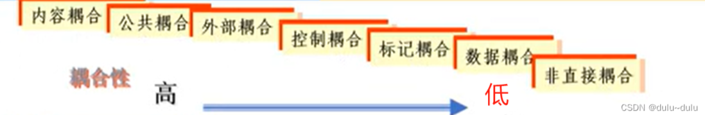
内容耦合
一个模块直接访问另一模块的内部数据。
一个模块不通过正常入口转到另一模块的内部。
一个模块有多个入口。
两个模块有部分代码重迭。
内容耦合在高级语言尤其是面向对象语言中是不允许出现的。
公共耦合
若干模块访问一个公共的数据环境(全局数据结构、共享的通信区、内存的公共覆盖区等)。耦合的复杂程度随耦合模块的数量的增加而显著增加。
公共耦合的两种情况:
松散公共耦合: 模块同时只对公共数据环境进行读或写一种操作。（一个模块要么只读公共数据区，要么只写公共数据区。）
紧密公共耦合: 若干模块对公共数据环境同时读和写操作,这种耦合使公共数据区的变化影响所有公共耦合模块，严重影响模块的可靠性和可适应，降低软件的可读性。这是一种强耦合方式。
一般来说，仅当模块间共享的数据很多，且通过参数的传递很不方便时才使用公共耦合。
外部耦合
一组模块都访问同一全局简单变量（而不是同一全局数据结构），而且不是通过参数表传递该全局变量的信息。
外部耦合 vs 公共耦合？外部耦合是共享一个简单变量，而公共耦合是共享一个公共数据环境。
控制耦合
一个模块传递给另一模块的信息是用于控制该模块内部逻辑的控制信号。显然，对被控制模块的任何修改，都会影响控制模块。
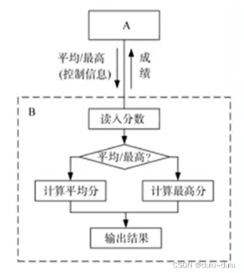
如何改变？将控制信号转到上层函数中处理，即定义两个函数，一个计算平均分，一个计算最高分。然后在上层函数中按需调用不同函数。即可降低至数据耦合
标记耦合（特征耦合）
一个模块传送给另一个模块的参数是一个复合的数据结构。模块间共享了数据结构，如高级语言中的数组名、记录名等，其实传递的是这些数据结构的地址。标记耦合会使某些本来无关的模块产生相互依赖性，同时由于某些模块包含了不需要的数据，也给纠错带来了麻烦。
改进：只传该数据结构中所需要的字段，降级为数据耦合。
数据耦合
一个模块传送给另一个模块的参数是一个单个的数据项或者单个数据项组成的数组。模块间传递的是简单的数据值，相当于高级语言中的值传递。
非直接耦合
两个模块间没有直接的关系，它们分别从属于不同模块的控制与调用，它们之间不传递任何信息。这种耦合程度最弱，模块的独立性最高。
2.2 内聚性
内聚性表示一个模块内部各个元素(数据、处理)之间联系的紧密程度。显然,块内联系愈紧,即内聚性愈高，模块独立性愈好。
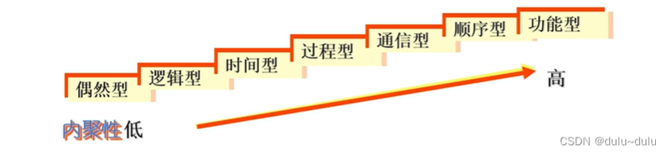
偶然内聚
又称为巧合型，为了节约空间，将毫无关系( 或者联系不多)的各元素放在一个模块中。模块元素关系松散，显然不易理解、不易修改。
逻辑内聚
将几个逻辑上相似的功能放在一个模块中，使用时由调用模块传递的参数确定执行的功能。由于要传递控制参数，所以影响了模块的内聚性。如果二者之间是控制耦合，那么被调用模块就是逻辑内聚型的模块。
时间内聚
又称为经典内聚。是把需要同时执行的成分放在一个模块中。比如初始化、中止操作这一类内部结构比较简单的模块。由于判定较少，因此比逻辑内聚高，但是由于内含多个功能，修改和维护困难。
过程内聚
一个模块内的处理元素是相关的，而且必须以特定的次序执行。
通信内聚
模块中的成分引用共同的输入数据，或者产生相同的输出数据，则称为是通信内聚。
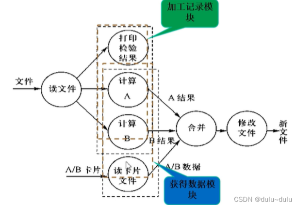
顺序内聚
一个模块内的处理元素都密切相关于同一功能，模块中某个成分的输出是另一成分的输入。由于这类模块是按数据执行顺序,模块的一部分依赖于另外一部分,因此具有较好的内聚性。
功能内聚
一个模块包括而且仅包括完成某一具体功能所必须的所有成分。或者说，模块的所有成分都是为完成该功能而协同工作、紧密联系、不可分割的。
3. 设计模式
设计模式是一套被反复使用的、多数人知晓的、经过分类编目的、代码设计经验的总结。使用设计模式是为了重用代码、让代码更容易被他人理解、保证代码可靠性。 毫无疑问，设计模式于己于他人于系统都是多赢的，设计模式使代码编制真正工程化，设计模式是软件工程的基石，如同大厦的一块块砖石一样。项目中合理地运用设计模式可以完美地解决很多问题，每种模式在现实中都有相应的原理来与之对应，每种模式都描述了一个在我们周围不断重复发生的问题，以及该问题的核心解决方案，这也是设计模式能被广泛应用的原因。
根据设计模式的参考书 Design Patterns - Elements of Reusable Object-Oriented Software（中文译名：设计模式 - 可复用的面向对象软件元素） 中所提到的，总共有 23 种设计模式。这些模式可以分为三大类：创建型模式（Creational Patterns）、结构型模式（Structural Patterns）、行为型模式（Behavioral Patterns）。当然，我们还会讨论另一类设计模式：J2EE 设计模式。
3.1 设计模型七大原则
3.1.1 开放-封闭原则（开闭原则）
开闭原则(Open-Closed Principle, OCP)：一个软件实体应当对扩展开放，对修改关闭。即软件实体应尽量在不修改原有代码的情况下进行扩展。
注意事项
1.通过接口或者抽象类约束扩展，对扩展进行边界限定，不允许出现在接口或抽象类中不存在的public方法。 2.参数类型、引用对象尽量使用接口或者抽象类，而不是实现类 3.抽象层尽量保持稳定，一旦确定不允许修改。
介绍
1）开闭原则（Open Closed Principle）是编程中最基础、最重要的设计原则
2）一个软件实体如类，模块和函数应该对扩展开放（对提供方），对修改关闭（对使用方）。用抽象构建框架，用实现扩展细节。 3）当软件需要变化时，尽量通过扩展软件实体的行为来实现变化，而不是通过修改已有的代码来实现变化。 4）编程中遵循其它原则，以及使用设计模式的目的就是遵循开闭原则。
3.1.2 单一职责原则
单一职责原则(Single Responsibility Principle, SRP)：一个类只负责一个功能领域中的相应职责，或者可以定义为：就一个类而言，应该只有一个引起它变化的原因。
3.1.3 依赖倒转原则
依赖倒转原则(Dependency Inversion Principle, DIP)：抽象不应该依赖于细节，细节应当依赖于抽象。换言之，要针对接口编程，而不是针对实现编程。
注意事项
高层模块不应该依赖于低层模块。两个都应该依赖抽象。
抽象不应该依赖结节。细节应依赖于抽象。
依赖倒转（倒置）的中心思想是面向接口编程
依赖倒转原则是基于这样的设计理念：相对于细节的多变性，抽象的东西要稳定的多。以抽象为基础搭建的架构比以细节为基础的架构要稳定的多。在java中，抽象指的是接口或抽象类，细节就是具体的实现类。
使用接口或抽象类的目的是制定好规范，而不涉及任何具体的操作，把展现细节的任务交给他们的实现类去完成。
3.1.4 迪米特法则（最小知识原则）
迪米特法则(Law of Demeter, LoD)：一个软件实体应当尽可能少地与其他实体发生相互作用。
一个软件实体应当尽可能的少与其他实体发生相互作用。每一个软件单位对其他软件单位都只有最少的知识，而且局限于那些与本单位密切相关的软件单位。迪米特法则的初衷在于降低类之间的耦合。由于每个类尽量减少对其他类的依赖，因此，很容易使得系统的功能模块功能独立，相互之间不存在（或很少有）依赖关系。迪米特法则不希望类之间建立直接的联系。如果有真的需要建立联系的，也希望能通过他的友元类来转达。因此，应用迪米特法则有可能造成一个后果就是：系统中存在大量的中介类，这些类之所以存在完全是为了传递类之间的相互关系，这在一定程度上增加了系统的复杂度。 即一个类对自己依赖的类知道的越少越好。也就是说，对于被依赖的类不管多少复杂，都尽量将逻辑封装在类的内部。对外除了提供的public 方法，不对外泄露任何信息。
3.1.5 接口隔离原则
接口隔离原则(Interface Segregation Principle, ISP)：使用多个专门的接口，而不使用单一的总接口，即客户端不应该依赖那些它不需要的接口。
3.1.6 合成/聚合复用原则
合成/聚合复用原则经常又叫做合成复用原则，就是在一个新的对象里面使用一些已有的对象，使之成为新对象的一部分，新的对象通过这些对象的委派达到复用已有功能的目的。他的设计原则是：要尽量使用合成/聚合，尽量不要使用继承。
3.1.7 里氏代换原则
里氏代换原则(Liskov Substitution Principle, LSP)：所有引用基类（父类）的地方必须能透明地使用其子类的对象。
里氏代换原则是面向对象设计的基本原则之一。即任何基类可以出现的地方，子类一定可以出现。里氏代换原则是继承复用的基石，只有当衍生类可以替换掉基类，软件单位的功能不受影响时，基类才能被真正复用，而衍生类也能够在积累的基础上增加新的行为，里氏代换原则是对“开-闭”原则的补充。实现“开-闭”原则的关键步骤就是抽象化。在基类与子类的继承关系就是抽象化的具体实现，所以里氏代换原则是对实现抽象化的具体步骤的规范。
3.2 创建型模式
这些设计模式提供了一种在创建对象的同时隐藏创建逻辑的方式，而不是使用 new 运算符直接实例化对象。这使得程序在判断针对某个给定实例需要创建哪些对象时更加灵活。
下面只给简介了，设计模式具体介绍：设计模式简谈-CSDN博客。这篇博客非常详细。
其中例子我都进行了简化，只截取了与该模式最相关的部分，向查看更详细的例子请去上面的博客。
3.2.1 工厂模式（Factory Pattern）
在工厂模式中，我们在创建对象时不会对客户端暴露创建逻辑，并且是通过使用一个共同的接口来指向新创建的对象。
简介：定义一个创建对象的接口，让其子类自己决定实例化哪一个工厂类，工厂模式使其创建过程延迟到子类进行。
主要解决：主要解决接口选择的问题。 何时使用：我们明确地计划不同条件下创建不同实例时。 如何解决：让其子类实现工厂接口，返回的也是一个抽象的产品。 关键代码：创建过程在其子类执行。 应用实例： 1、您需要一辆汽车，可以直接从工厂里面提货，而不用去管这辆汽车是怎么做出来的，以及这个汽车里面的具体实现。 2、Hibernate 换数据库只需换方言和驱动就可以。 优点： 1、一个调用者想创建一个对象，只要知道其名称就可以了。 2、扩展性高，如果想增加一个产品，只要扩展一个工厂类就可以。 3、屏蔽产品的具体实现，调用者只关心产品的接口。 缺点：每次增加一个产品时，都需要增加一个具体类和对象实现工厂，使得系统中类的个数成倍增加，在一定程度上增加了系统的复杂度，同时也增加了系统具体类的依赖。这并不是什么好事。 使用场景： 1、日志记录器：记录可能记录到本地硬盘、系统事件、远程服务器等，用户可以选择记录日志到什么地方。 2、数据库访问，当用户不知道最后系统采用哪一类数据库，以及数据库可能有变化时。 3、设计一个连接服务器的框架，需要三个协议，"POP3"、"IMAP"、"HTTP"，可以把这三个作为产品类，共同实现一个接口。 注意事项：作为一种创建类模式，在任何需要生成复杂对象的地方，都可以使用工厂方法模式。有一点需要注意的地方就是复杂对象适合使用工厂模式，而简单对象，特别是只需要通过 new 就可以完成创建的对象，无需使用工厂模式。如果使用工厂模式，就需要引入一个工厂类，会增加系统的复杂度。
例如，利用工厂从<name>$<school>的模式字符串种创建出Person。
1 | |
3.2.2 抽象工厂模式（Abstract Factory Pattern）
抽象工厂模式（Abstract Factory Pattern）是围绕一个超级工厂创建其他工厂。该超级工厂又称为其他工厂的工厂。这种类型的设计模式属于创建型模式，它提供了一种创建对象的最佳方式。
在抽象工厂模式中，接口是负责创建一个相关对象的工厂，不需要显式指定它们的类。每个生成的工厂都能按照工厂模式提供对象。
意图：提供一个创建一系列相关或相互依赖对象的接口，而无需指定它们具体的类。
主要解决：主要解决接口选择的问题。 何时使用：系统的产品有多于一个的产品族，而系统只消费其中某一族的产品。 如何解决：在一个产品族里面，定义多个产品。 关键代码：在一个工厂里聚合多个同类产品。 应用实例：工作了，为了参加一些聚会，肯定有两套或多套衣服吧，比如说有商务装（成套，一系列具体产品）、时尚装（成套，一系列具体产品），甚至对于一个家庭来说，可能有商务女装、商务男装、时尚女装、时尚男装，这些也都是成套的，即一系列具体产品。假设一种情况（现实中是不存在的，要不然，没法进入共产主义了，但有利于说明抽象工厂模式），在您的家中，某一个衣柜（具体工厂）只能存放某一种这样的衣服（成套，一系列具体产品），每次拿这种成套的衣服时也自然要从这个衣柜中取出了。用 OOP 的思想去理解，所有的衣柜（具体工厂）都是衣柜类的（抽象工厂）某一个，而每一件成套的衣服又包括具体的上衣（某一具体产品），裤子（某一具体产品），这些具体的上衣其实也都是上衣（抽象产品），具体的裤子也都是裤子（另一个抽象产品）。 优点：当一个产品族中的多个对象被设计成一起工作时，它能保证客户端始终只使用同一个产品族中的对象。 缺点：产品族扩展非常困难，要增加一个系列的某一产品，既要在抽象的 Creator 里加代码，又要在具体的里面加代码。 使用场景： 1、QQ 换皮肤，一整套一起换。 2、生成不同操作系统的程序。 注意事项：产品族难扩展，产品等级易扩展。
1 | |
3.2.3 单例模式（Singleton Pattern）
单例模式（Singleton Pattern）是 Java 中最简单的设计模式之一。这种类型的设计模式属于创建型模式，它提供了一种创建对象的最佳方式。
这种模式涉及到一个单一的类，该类负责创建自己的对象，同时确保只有单个对象被创建。这个类提供了一种访问其唯一的对象的方式，可以直接访问，不需要实例化该类的对象。
注意
- 1、单例类只能有一个实例。
- 2、单例类必须自己创建自己的唯一实例。
- 3、单例类必须给所有其他对象提供这一实例。
1 | |
3.2.4 建造者模式（Builder Pattern）
建造者模式（Builder Pattern）使用多个简单的对象一步一步构建成一个复杂的对象。这种类型的设计模式属于创建型模式，它提供了一种创建对象的最佳方式。
意图：将一个复杂的构建与其表示相分离，使得同样的构建过程可以创建不同的表示。
主要解决：主要解决在软件系统中，有时候面临着"一个复杂对象"的创建工作，其通常由各个部分的子对象用一定的算法构成；由于需求的变化，这个复杂对象的各个部分经常面临着剧烈的变化，但是将它们组合在一起的算法却相对稳定。 何时使用：一些基本部件不会变，而其组合经常变化的时候。 如何解决：将变与不变分离开。 关键代码：建造者：创建和提供实例，导演：管理建造出来的实例的依赖关系。 应用实例： 1、去肯德基，汉堡、可乐、薯条、炸鸡翅等是不变的，而其组合是经常变化的，生成出所谓的"套餐"。 2、JAVA 中的 StringBuilder。 优点： 1、建造者独立，易扩展。 2、便于控制细节风险。 缺点： 1、产品必须有共同点，范围有限制。 2、如内部变化复杂，会有很多的建造类。 使用场景： 1、需要生成的对象具有复杂的内部结构。 2、需要生成的对象内部属性本身相互依赖。 注意事项：与工厂模式的区别是：建造者模式更加关注与零件装配的顺序。
1 | |
3.2.5 原型模式（Prototype Pattern）
原型模式（Prototype Pattern）是用于创建重复的对象，同时又能保证性能。这种类型的设计模式属于创建型模式，它提供了一种创建对象的最佳方式。这种模式是实现了一个原型接口，该接口用于创建当前对象的克隆。当直接创建对象的代价比较大时，则采用这种模式。
意图：用原型实例指定创建对象的种类，并且通过拷贝这些原型创建新的对象。
主要解决：在运行期建立和删除原型。 何时使用： 1、当一个系统应该独立于它的产品创建，构成和表示时。 2、当要实例化的类是在运行时刻指定时，例如，通过动态装载。 3、为了避免创建一个与产品类层次平行的工厂类层次时。 4、当一个类的实例只能有几个不同状态组合中的一种时。建立相应数目的原型并克隆它们可能比每次用合适的状态手工实例化该类更方便一些。 如何解决：利用已有的一个原型对象，快速地生成和原型对象一样的实例。 关键代码： 1、实现克隆操作，在 JAVA 继承 Cloneable，重写 clone()，在 .NET 中可以使用 Object 类的 MemberwiseClone() 方法来实现对象的浅拷贝或通过序列化的方式来实现深拷贝。 2、原型模式同样用于隔离类对象的使用者和具体类型（易变类）之间的耦合关系，它同样要求这些"易变类"拥有稳定的接口。 应用实例： 1、细胞分裂。 2、JAVA 中的 Object clone() 方法。 优点： 1、性能提高。 2、逃避构造函数的约束。 缺点： 1、配备克隆方法需要对类的功能进行通盘考虑，这对于全新的类不是很难，但对于已有的类不一定很容易，特别当一个类引用不支持串行化的间接对象，或者引用含有循环结构的时候。 2、必须实现 Cloneable 接口。 使用场景： 1、资源优化场景。 2、类初始化需要消化非常多的资源，这个资源包括数据、硬件资源等。 3、性能和安全要求的场景。 4、通过 new 产生一个对象需要非常繁琐的数据准备或访问权限，则可以使用原型模式。 5、一个对象多个修改者的场景。 6、一个对象需要提供给其他对象访问，而且各个调用者可能都需要修改其值时，可以考虑使用原型模式拷贝多个对象供调用者使用。 7、在实际项目中，原型模式很少单独出现，一般是和工厂方法模式一起出现，通过 clone 的方法创建一个对象，然后由工厂方法提供给调用者。原型模式已经与 Java 融为浑然一体，大家可以随手拿来使用。 注意事项：与通过对一个类进行实例化来构造新对象不同的是，原型模式是通过拷贝一个现有对象生成新对象的。浅拷贝实现 Cloneable，重写clone()，深拷贝是通过实现 Serializable 读取二进制流。
1 | |
工厂模式 vs 抽象工厂模式 vs 建造者模式
三者均使用一个外部类完成一个类的构建，其中建造者模式强调建造的顺序，逐步建造出对象。而工厂模式通常是一次性建立出整个完整可用的对象。
实践中似乎工厂模式常常使用静态方法？
1 | |
抽象工厂模式在工厂模式的基础上新增一层抽象工厂层，工厂类继承抽象工厂。抽象工厂声明了一个相似产品族的创建方式。利用抽象工厂模式可以完成一个产品族的创建。
原型模式 vs 单例模式
两者均是一种依靠已经创建好的对象创建新的对象的方式。
原型模式在首次创建出一个对象后，再次请求创建对象时使用Clone方式将一个创建好的对象clone一份，返回clone后的新对象。
单例模式在首次请求创建对象时创建一个新的对象，此后再次请求该对象时仅返回创建好的对象的引用。
原型模式创建了同一个对象的多个副本，单例模式从始至终只有一个对象和多个引用。
3.3 结构型模式
3.3.1 适配器模式
适配器模式（Adapter Pattern）是作为两个不兼容的接口之间的桥梁。这种类型的设计模式属于结构型模式，它结合了两个独立接口的功能。
意图：将一个类的接口转换成客户希望的另外一个接口。适配器模式使得原本由于接口不兼容而不能一起工作的那些类可以一起工作。
主要解决：主要解决在软件系统中，常常要将一些"现存的对象"放到新的环境中，而新环境要求的接口是现对象不能满足的。 何时使用： 1、系统需要使用现有的类，而此类的接口不符合系统的需要。 2、想要建立一个可以重复使用的类，用于与一些彼此之间没有太大关联的一些类，包括一些可能在将来引进的类一起工作，这些源类不一定有一致的接口。 3、通过接口转换，将一个类插入另一个类系中。（比如老虎和飞禽，现在多了一个飞虎，在不增加实体的需求下，增加一个适配器，在里面包容一个虎对象，实现飞的接口。） 如何解决：继承或依赖（推荐）。 关键代码：适配器继承或依赖已有的对象，实现想要的目标接口。 应用实例： 1、美国电器 110V，中国 220V，就要有一个适配器将 110V 转化为 220V。 2、JAVA JDK 1.1 提供了 Enumeration 接口，而在 1.2 中提供了 Iterator 接口，想要使用 1.2 的 JDK，则要将以前系统的 Enumeration 接口转化为 Iterator 接口，这时就需要适配器模式。 3、在 LINUX 上运行 WINDOWS 程序。 4、JAVA 中的 jdbc。 优点： 1、可以让任何两个没有关联的类一起运行。 2、提高了类的复用。 3、增加了类的透明度。 4、灵活性好。 缺点： 1、过多地使用适配器，会让系统非常零乱，不易整体进行把握。比如，明明看到调用的是 A 接口，其实内部被适配成了 B 接口的实现，一个系统如果太多出现这种情况，无异于一场灾难。因此如果不是很有必要，可以不使用适配器，而是直接对系统进行重构。 2.由于 JAVA 至多继承一个类，所以至多只能适配一个适配者类，而且目标类必须是抽象类。 使用场景：有动机地修改一个正常运行的系统的接口，这时应该考虑使用适配器模式。 注意事项：适配器不是在详细设计时添加的，而是解决正在服役的项目的问题。
例如，现在有两个接口：
1 | |
显然两者虽然很相似，但是无法兼容，如果我们想让BarDrawable的实现也支持Drawable接口，那么最好的办法就是新增一个适配器类。
1 | |
可见，适配器BarDrawableAapter实现了需要兼容的接口Drawable，并将需要被兼容的接口BarDrawable包装起来，对外提供Drawable，这使得BarDrawable对外提供出Drawable接口。完成Drawable对BarDrawable的兼容。
3.3.2 桥接模式
桥接（Bridge）是用于把抽象化与实现化解耦，使得二者可以独立变化。这种类型的设计模式属于结构型模式，它通过提供抽象化和实现化之间的桥接结构，来实现二者的解耦。
这种模式涉及到一个作为桥接的接口，使得实体类的功能独立于接口实现类。这两种类型的类可被结构化改变而互不影响。
** 意图**：将抽象部分与实现部分分离，使它们都可以独立的变化。
主要解决：在有多种可能会变化的情况下，用继承会造成类爆炸问题，扩展起来不灵活。 何时使用：实现系统可能有多个角度分类，每一种角度都可能变化。 如何解决：把这种多角度分类分离出来，让它们独立变化，减少它们之间耦合。 关键代码：抽象类依赖实现类。 应用实例： 1、猪八戒从天蓬元帅转世投胎到猪，转世投胎的机制将尘世划分为两个等级，即：灵魂和肉体，前者相当于抽象化，后者相当于实现化。生灵通过功能的委派，调用肉体对象的功能，使得生灵可以动态地选择。 2、墙上的开关，可以看到的开关是抽象的，不用管里面具体怎么实现的。 优点： 1、抽象和实现的分离。 2、优秀的扩展能力。 3、实现细节对客户透明。 缺点：桥接模式的引入会增加系统的理解与设计难度，由于聚合关联关系建立在抽象层，要求开发者针对抽象进行设计与编程。 使用场景： 1、如果一个系统需要在构件的抽象化角色和具体化角色之间增加更多的灵活性，避免在两个层次之间建立静态的继承联系，通过桥接模式可以使它们在抽象层建立一个关联关系。 2、对于那些不希望使用继承或因为多层次继承导致系统类的个数急剧增加的系统，桥接模式尤为适用。 3、一个类存在两个独立变化的维度，且这两个维度都需要进行扩展。 注意事项：对于两个独立变化的维度，使用桥接模式再适合不过了。
个人感觉桥接模式主要应用于回调高层模块的解偶
例如，让一个任务执行器TaskExecutor在执行完任务后通知视图View，写成这样：
1 | |
但是这么写存在很大问题，因为视图View一般都是高层模组，这么写无疑使得底层模块依赖了高层模块。所以这里利用接口进行桥接， 将抽象accpet方法和View的具体实现进行分离。
1 | |
3.3.3 过滤器模式
过滤器模式（Filter Pattern）或标准模式（Criteria Pattern）是一种设计模式，这种模式允许开发人员使用不同的标准来过滤一组对象，通过逻辑运算以解耦的方式把它们连接起来。这种类型的设计模式属于结构型模式，它结合多个标准来获得单一标准。
似乎还有约束器模式这一称谓？
1 | |
3.3.4 组合模式
组合模式（Composite Pattern），又叫部分整体模式，是用于把一组相似的对象当作一个单一的对象。组合模式依据树形结构来组合对象，用来表示部分以及整体层次。这种类型的设计模式属于结构型模式，它创建了对象组的树形结构。
意图：将对象组合成树形结构以表示"部分-整体"的层次结构。组合模式使得用户对单个对象和组合对象的使用具有一致性。
主要解决：它在我们树型结构的问题中，模糊了简单元素和复杂元素的概念，客户程序可以像处理简单元素一样来处理复杂元素，从而使得客户程序与复杂元素的内部结构解耦。 何时使用： 1、您想表示对象的部分-整体层次结构（树形结构）。 2、您希望用户忽略组合对象与单个对象的不同，用户将统一地使用组合结构中的所有对象。 如何解决：树枝和叶子实现统一接口，树枝内部组合该接口。 关键代码：树枝内部组合该接口，并且含有内部属性 List，里面放 Component。 应用实例： 1、算术表达式包括操作数、操作符和另一个操作数，其中，另一个操作数也可以是操作数、操作符和另一个操作数。 2、在 JAVA AWT 和 SWING 中，对于 Button 和 Checkbox 是树叶，Container 是树枝。 优点： 1、高层模块调用简单。 2、节点自由增加。 缺点：在使用组合模式时，其叶子和树枝的声明都是实现类，而不是接口，违反了依赖倒置原则。 使用场景：部分、整体场景，如树形菜单，文件、文件夹的管理。
例子中是国家三级行政区的表示：
1 | |
3.3.5 装饰器模式
装饰器模式（Decorator Pattern）允许向一个现有的对象添加新的功能，同时又不改变其结构。这种类型的设计模式属于结构型模式，它是作为现有的类的一个包装。
这种模式创建了一个装饰类，用来包装原有的类，并在保持类方法签名完整性的前提下，提供了额外的功能。
意图：动态地给一个对象添加一些额外的职责。就增加功能来说，装饰器模式相比生成子类更为灵活。
主要解决：一般的，我们为了扩展一个类经常使用继承方式实现，由于继承为类引入静态特征，并且随着扩展功能的增多，子类会很膨胀。 何时使用：在不想增加很多子类的情况下扩展类。 如何解决：将具体功能职责划分，同时继承装饰者模式。 关键代码： 1、Component 类充当抽象角色，不应该具体实现。 2、修饰类引用和继承 Component 类，具体扩展类重写父类方法。 应用实例： 1、孙悟空有 72 变，当他变成"庙宇"后，他的根本还是一只猴子，但是他又有了庙宇的功能。 2、不论一幅画有没有画框都可以挂在墙上，但是通常都是有画框的，并且实际上是画框被挂在墙上。在挂在墙上之前，画可以被蒙上玻璃，装到框子里；这时画、玻璃和画框形成了一个物体。 优点：装饰类和被装饰类可以独立发展，不会相互耦合，装饰模式是继承的一个替代模式，装饰模式可以动态扩展一个实现类的功能。 缺点：多层装饰比较复杂。 使用场景： 1、扩展一个类的功能。 2、动态增加功能，动态撤销。
1 | |
3.3.6 外观模式
外观模式（Facade Pattern）隐藏系统的复杂性，并向客户端提供了一个客户端可以访问系统的接口。这种类型的设计模式属于结构型模式，它向现有的系统添加一个接口，来隐藏系统的复杂性。
这种模式涉及到一个单一的类，该类提供了客户端请求的简化方法和对现有系统类方法的委托调用。
意图：为子系统中的一组接口提供一个一致的界面，外观模式定义了一个高层接口，这个接口使得这一子系统更加容易使用。
主要解决：降低访问复杂系统的内部子系统时的复杂度，简化客户端之间的接口。 何时使用： 1、客户端不需要知道系统内部的复杂联系，整个系统只需提供一个"接待员"即可。 2、定义系统的入口。 如何解决：客户端不与系统耦合，外观类与系统耦合。 关键代码：在客户端和复杂系统之间再加一层，这一层将调用顺序、依赖关系等处理好。 应用实例： 1、去医院看病，可能要去挂号、门诊、划价、取药，让患者或患者家属觉得很复杂，如果有提供接待人员，只让接待人员来处理，就很方便。 2、JAVA 的三层开发模式。 优点： 1、减少系统相互依赖。 2、提高灵活性。 3、提高了安全性。 缺点：不符合开闭原则，如果要改东西很麻烦，继承重写都不合适。 使用场景： 1、为复杂的模块或子系统提供外界访问的模块。 2、子系统相对独立。 3、预防低水平人员带来的风险。
个人理解是在一层复杂的多样的接口层上再套一层简化后的接口。
1 | |
3.3.7 享元模式
享元模式（Flyweight Pattern）主要用于减少创建对象的数量，以减少内存占用和提高性能。这种类型的设计模式属于结构型模式，它提供了减少对象数量从而改善应用所需的对象结构的方式。
享元模式尝试重用现有的同类对象，如果未找到匹配的对象，则创建新对象。我们将通过创建 5 个对象来画出 20 个分布于不同位置的圆来演示这种模式。由于只有 5 种可用的颜色，所以 color 属性被用来检查现有的 Circle 对象。
1 | |
3.3.8 代理模式
在代理模式（Proxy Pattern）中，一个类代表另一个类的功能。这种类型的设计模式属于结构型模式。
在代理模式中，我们创建具有现有对象的对象，以便向外界提供功能接口。
意图：为其他对象提供一种代理以控制对这个对象的访问。
主要解决：在直接访问对象时带来的问题，比如说：要访问的对象在远程的机器上。在面向对象系统中，有些对象由于某些原因（比如对象创建开销很大，或者某些操作需要安全控制，或者需要进程外的访问），直接访问会给使用者或者系统结构带来很多麻烦，我们可以在访问此对象时加上一个对此对象的访问层。 何时使用：想在访问一个类时做一些控制。 如何解决：增加中间层。 关键代码：实现与被代理类组合。 应用实例： 1、Windows 里面的快捷方式。 2、猪八戒去找高翠兰结果是孙悟空变的，可以这样理解：把高翠兰的外貌抽象出来，高翠兰本人和孙悟空都实现了这个接口，猪八戒访问高翠兰的时候看不出来这个是孙悟空，所以说孙悟空是高翠兰代理类。 3、买火车票不一定在火车站买，也可以去代售点。 4、一张支票或银行存单是账户中资金的代理。支票在市场交易中用来代替现金，并提供对签发人账号上资金的控制。 5、spring aop。 优点： 1、职责清晰。 2、高扩展性。 3、智能化。 缺点： 1、由于在客户端和真实主题之间增加了代理对象，因此有些类型的代理模式可能会造成请求的处理速度变慢。 2、实现代理模式需要额外的工作，有些代理模式的实现非常复杂。 使用场景：按职责来划分，通常有以下使用场景： 1、远程代理。 2、虚拟代理。 3、Copy-on-Write 代理。 4、保护（Protect or Access）代理。 5、Cache代理。 6、防火墙（Firewall）代理。 7、同步化（Synchronization）代理。 8、智能引用（Smart Reference）代理。 注意事项： 1、和适配器模式的区别：适配器模式主要改变所考虑对象的接口，而代理模式不能改变所代理类的接口。 2、和装饰器模式的区别：装饰器模式为了增强功能，而代理模式是为了加以控制。
代理模式 vs 装饰器模式
1.代理模式对对象实现访问控制而不增强对象本身的功能，装饰器模式是增强对象的功能。
2.代理模式为对象生成一个代理对象，由代理对象访问原对象；装饰器模式更多对原对象的功能进行增强，是继承方案的一个代替。
3.代理模式的重心在于调用对象的某个功能，并做一个和对象本身无关的业务，装饰器模式重心在于扩展自身的功能。
个人疑问：不过Spring的AOP也用代理实现，其宣称是增强功能？所以很奇怪吧？感觉就是个名头的区别而已。
3.4 行为性模式
3.4.1 责任链模式
顾名思义，责任链模式（Chain of Responsibility Pattern）为请求创建了一个接收者对象的链。这种模式给予请求的类型，对请求的发送者和接收者进行解耦。这种类型的设计模式属于行为型模式。
在这种模式中，通常每个接收者都包含对另一个接收者的引用。如果一个对象不能处理该请求，那么它会把相同的请求传给下一个接收者，依此类推。
意图：避免请求发送者与接收者耦合在一起，让多个对象都有可能接收请求，将这些对象连接成一条链，并且沿着这条链传递请求，直到有对象处理它为止。
主要解决：职责链上的处理者负责处理请求，客户只需要将请求发送到职责链上即可，无须关心请求的处理细节和请求的传递，所以职责链将请求的发送者和请求的处理者解耦了。 何时使用：在处理消息的时候以过滤很多道。 如何解决：拦截的类都实现统一接口。 关键代码：Handler 里面聚合它自己，在 HandlerRequest 里判断是否合适，如果没达到条件则向下传递，向谁传递之前 set 进去。 应用实例： 1、红楼梦中的"击鼓传花"。 2、JS 中的事件冒泡。 3、JAVA WEB 中 Apache Tomcat 对 Encoding 的处理，Struts2 的拦截器，jsp servlet 的 Filter。 优点： 1、降低耦合度。它将请求的发送者和接收者解耦。 2、简化了对象。使得对象不需要知道链的结构。 3、增强给对象指派职责的灵活性。通过改变链内的成员或者调动它们的次序，允许动态地新增或者删除责任。 4、增加新的请求处理类很方便。 缺点： 1、不能保证请求一定被接收。 2、系统性能将受到一定影响，而且在进行代码调试时不太方便，可能会造成循环调用。 3、可能不容易观察运行时的特征，有碍于除错。 使用场景： 1、有多个对象可以处理同一个请求，具体哪个对象处理该请求由运行时刻自动确定。 2、在不明确指定接收者的情况下，向多个对象中的一个提交一个请求。 3、可动态指定一组对象处理请求。
1 | |
3.4.2 命令模式
命令模式（Command Pattern）是一种数据驱动的设计模式，它属于行为型模式。请求以命令的形式包裹在对象中，并传给调用对象。调用对象寻找可以处理该命令的合适的对象，并把该命令传给相应的对象，该对象执行命令。
意图：将一个请求封装成一个对象，从而使您可以用不同的请求对客户进行参数化。
主要解决：在软件系统中，行为请求者与行为实现者通常是一种紧耦合的关系，但某些场合，比如需要对行为进行记录、撤销或重做、事务等处理时，这种无法抵御变化的紧耦合的设计就不太合适。 何时使用：在某些场合，比如要对行为进行"记录、撤销/重做、事务"等处理，这种无法抵御变化的紧耦合是不合适的。在这种情况下，如何将"行为请求者"与"行为实现者"解耦？将一组行为抽象为对象，可以实现二者之间的松耦合。 如何解决：通过调用者调用接受者执行命令，顺序：调用者→命令→接受者。 关键代码：定义三个角色：1、received 真正的命令执行对象 2、Command 3、invoker 使用命令对象的入口 应用实例：struts 1 中的 action 核心控制器 ActionServlet 只有一个，相当于 Invoker，而模型层的类会随着不同的应用有不同的模型类，相当于具体的 Command。 优点： 1、降低了系统耦合度。 2、新的命令可以很容易添加到系统中去。 缺点：使用命令模式可能会导致某些系统有过多的具体命令类。 使用场景：认为是命令的地方都可以使用命令模式，比如： 1、GUI 中每一个按钮都是一条命令。 2、模拟 CMD。 注意事项：系统需要支持命令的撤销(Undo)操作和恢复(Redo)操作，也可以考虑使用命令模式，见命令模式的扩展。
1 | |
3.4.3 解释器模式
解释器模式（Interpreter Pattern）提供了评估语言的语法或表达式的方式，它属于行为型模式。这种模式实现了一个表达式接口，该接口解释一个特定的上下文。这种模式被用在 SQL 解析、符号处理引擎等。
意图：给定一个语言，定义它的文法表示，并定义一个解释器，这个解释器使用该标识来解释语言中的句子。
主要解决：对于一些固定文法构建一个解释句子的解释器。 何时使用：如果一种特定类型的问题发生的频率足够高，那么可能就值得将该问题的各个实例表述为一个简单语言中的句子。这样就可以构建一个解释器，该解释器通过解释这些句子来解决该问题。 如何解决：构建语法树，定义终结符与非终结符。 关键代码：构建环境类，包含解释器之外的一些全局信息，一般是 HashMap。 应用实例：编译器、运算表达式计算。 优点： 1、可扩展性比较好，灵活。 2、增加了新的解释表达式的方式。 3、易于实现简单文法。 缺点： 1、可利用场景比较少。 2、对于复杂的文法比较难维护。 3、解释器模式会引起类膨胀。 4、解释器模式采用递归调用方法。 使用场景： 1、可以将一个需要解释执行的语言中的句子表示为一个抽象语法树。 2、一些重复出现的问题可以用一种简单的语言来进行表达。 3、一个简单语法需要解释的场景。
1 | |
3.4.4 迭代器模式
迭代器模式（Iterator Pattern）是 Java 和 .Net 编程环境中非常常用的设计模式。这种模式用于顺序访问集合对象的元素，不需要知道集合对象的底层表示。
意图：提供一种方法顺序访问一个聚合对象中各个元素, 而又无须暴露该对象的内部表示。
主要解决：不同的方式来遍历整个整合对象。 何时使用：遍历一个聚合对象。 如何解决：把在元素之间游走的责任交给迭代器，而不是聚合对象。 关键代码：定义接口：hasNext, next。 应用实例：JAVA 中的 iterator。 优点： 1、它支持以不同的方式遍历一个聚合对象。 2、迭代器简化了聚合类。 3、在同一个聚合上可以有多个遍历。 4、在迭代器模式中，增加新的聚合类和迭代器类都很方便，无须修改原有代码。 缺点：由于迭代器模式将存储数据和遍历数据的职责分离，增加新的聚合类需要对应增加新的迭代器类，类的个数成对增加，这在一定程度上增加了系统的复杂性。 使用场景： 1、访问一个聚合对象的内容而无须暴露它的内部表示。 2、需要为聚合对象提供多种遍历方式。 3、为遍历不同的聚合结构提供一个统一的接口。 注意事项：迭代器模式就是分离了集合对象的遍历行为，抽象出一个迭代器类来负责，这样既可以做到不暴露集合的内部结构，又可让外部代码透明地访问集合内部的数据。
ps.java中有内置的Iterator和Iterable可以继承/实现。
1 | |
3.4.5 中介者模式
中介者模式（Mediator Pattern）是用来降低多个对象和类之间的通信复杂性。这种模式提供了一个中介类，该类通常处理不同类之间的通信，并支持松耦合，使代码易于维护。中介者模式属于行为型模式。
意图：用一个中介对象来封装一系列的对象交互，中介者使各对象不需要显式地相互引用，从而使其耦合松散，而且可以独立地改变它们之间的交互。
主要解决：对象与对象之间存在大量的关联关系，这样势必会导致系统的结构变得很复杂，同时若一个对象发生改变，我们也需要跟踪与之相关联的对象，同时做出相应的处理。 何时使用：多个类相互耦合，形成了网状结构。 如何解决：将上述网状结构分离为星型结构。 关键代码：对象 Colleague 之间的通信封装到一个类中单独处理。 应用实例： 1、中国加入 WTO 之前是各个国家相互贸易，结构复杂，现在是各个国家通过 WTO 来互相贸易。 2、机场调度系统。 3、MVC 框架，其中C（控制器）就是 M（模型）和 V（视图）的中介者。 优点： 1、降低了类的复杂度，将一对多转化成了一对一。 2、各个类之间的解耦。 3、符合迪米特原则。 缺点：中介者会庞大，变得复杂难以维护。 使用场景： 1、系统中对象之间存在比较复杂的引用关系，导致它们之间的依赖关系结构混乱而且难以复用该对象。 2、想通过一个中间类来封装多个类中的行为，而又不想生成太多的子类。 注意事项：不应当在职责混乱的时候使用。
1 | |
3.4.6 备忘录模式
备忘录模式（Memento Pattern）保存一个对象的某个状态，以便在适当的时候恢复对象。备忘录模式属于行为型模式。
意图：在不破坏封装性的前提下，捕获一个对象的内部状态，并在该对象之外保存这个状态。
主要解决：所谓备忘录模式就是在不破坏封装的前提下，捕获一个对象的内部状态，并在该对象之外保存这个状态，这样可以在以后将对象恢复到原先保存的状态。 何时使用：很多时候我们总是需要记录一个对象的内部状态，这样做的目的就是为了允许用户取消不确定或者错误的操作，能够恢复到他原先的状态，使得他有"后悔药"可吃。 如何解决：通过一个备忘录类专门存储对象状态。 关键代码：客户不与备忘录类耦合，与备忘录管理类耦合。 应用实例： 1、后悔药。 2、打游戏时的存档。 3、Windows 里的 ctrl + z。 4、IE 中的后退。 5、数据库的事务管理。 优点： 1、给用户提供了一种可以恢复状态的机制，可以使用户能够比较方便地回到某个历史的状态。 2、实现了信息的封装，使得用户不需要关心状态的保存细节。 缺点：消耗资源。如果类的成员变量过多，势必会占用比较大的资源，而且每一次保存都会消耗一定的内存。 使用场景： 1、需要保存/恢复数据的相关状态场景。 2、提供一个可回滚的操作。 注意事项： 1、为了符合迪米特原则，还要增加一个管理备忘录的类。 2、为了节约内存，可使用原型模式+备忘录模式。
3.4.7 观察者模式
当对象间存在一对多关系时，则使用观察者模式（Observer Pattern）。比如，当一个对象被修改时，则会自动通知依赖它的对象。观察者模式属于行为型模式。
意图：定义对象间的一种一对多的依赖关系，当一个对象的状态发生改变时，所有依赖于它的对象都得到通知并被自动更新。
主要解决：一个对象状态改变给其他对象通知的问题，而且要考虑到易用和低耦合，保证高度的协作。 何时使用：一个对象（目标对象）的状态发生改变，所有的依赖对象（观察者对象）都将得到通知，进行广播通知。 如何解决：使用面向对象技术，可以将这种依赖关系弱化。 关键代码：在抽象类里有一个 ArrayList 存放观察者们。 应用实例： 1、拍卖的时候，拍卖师观察最高标价，然后通知给其他竞价者竞价。 2、西游记里面悟空请求菩萨降服红孩儿，菩萨洒了一地水招来一个老乌龟，这个乌龟就是观察者，他观察菩萨洒水这个动作。 优点： 1、观察者和被观察者是抽象耦合的。 2、建立一套触发机制。 缺点： 1、如果一个被观察者对象有很多的直接和间接的观察者的话，将所有的观察者都通知到会花费很多时间。 2、如果在观察者和观察目标之间有循环依赖的话，观察目标会触发它们之间进行循环调用，可能导致系统崩溃。 3、观察者模式没有相应的机制让观察者知道所观察的目标对象是怎么发生变化的，而仅仅只是知道观察目标发生了变化。 使用场景：一个抽象模型有两个方面，其中一个方面依赖于另一个方面。将这些方面封装在独立的对象中使它们可以各自独立地改变和复用。 一个对象的改变将导致其他一个或多个对象也发生改变，而不知道具体有多少对象将发生改变，可以降低对象之间的耦合度。 一个对象必须通知其他对象，而并不知道这些对象是谁。 需要在系统中创建一个触发链，A对象的行为将影响B对象，B对象的行为将影响C对象……，可以使用观察者模式创建一种链式触发机制。 注意事项： 1、JAVA 中已经有了对观察者模式的支持类。 2、避免循环引用。 3、如果顺序执行，某一观察者错误会导致系统卡壳，一般采用异步方式。
3.4.8 状态模式
3.4.9 空对象模式
3.4.10 策略模式
3.4.11 模板模式
3.4.12 访问者模式
3.5 J2EE模式
3.5.1 MVC模式
3.5.2 业务代码模式
3.5.3 组合实体模式
3.5.4 数据访问对象模式
3.5.5 前端控制器模式
3.5.6 拦截过滤器模式
4. Spring介绍
4.1 介绍
Spring框架是一个开源的Java平台，它为开发者提供了一种方法来简化企业级应用程序的开发。Spring框架的核心是控制反转（IoC）和面向切面编程（AOP）。
控制反转（IoC）
控制反转是一种软件设计模式，在这种模式中，对象的依赖关系不是由应用程序代码直接管理，而是由外部容器来管理。
面向切面编程（AOP）
面向切面编程允许你把系统中的关注点（如日志记录、权限控制等）从主业务逻辑中分离出来
核心组件
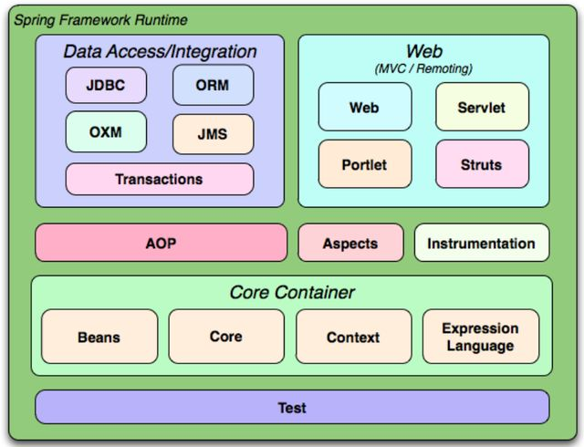
Core Container（核心容器）：提供核心功能，包括依赖注入（DI），事件发布，资源访问等。
Data Access/Integration（数据访问/集成）：提供与数据库交互的支持，包括事务管理。
Web：提供构建Web应用的支持，例如Spring MVC。
AOP：提供面向切面编程的支持。
Instrumentation：提供类检测和类加载器实现，用于某些应用服务器。
Test：提供用于测试Spring应用的支持。
常用模块
常见注解
bean 注入与装配的的方式有很多种，可以通过 xml，get set 方式，构造函数或者注解等。简单易用的方式就是使用 Spring 的注解了，Spring 提供了大量的注解方式。
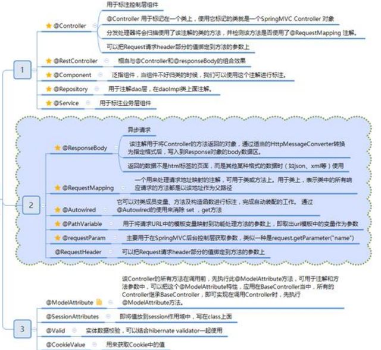
@Controller vs @RestController
@RestController包含了@Controller和@ResponseBody两个注解，表明该controller是构建符合RESTful风格api，会将所有处理请求的方法默认解析为将方法返回值直接作为响应体内容返回。
4.2 常见注解
4.2.1 Spring Bean注解
由以下注解标记的类会被识别为Spring Bean，在Spring容器初始化时被创建，并由其管理。
@Component
1 | |
@Component注解是Spring Bean内所用不同类型的根注解，被其标注的类被Spring识别为Bean，并在App启动时由容器管理。
@Repository
1 | |
@Repository注解用于标注Dao层实现，本质上还是一个Compoent。
@Service
1 | |
@Service注解用于标注业务层实现，本质上还是一个Compoent。
@Controller
@Controller注解用于标注控制器实现，本质上还是一个Compoent。源码和前面几种一样。
@RestController
1 | |
@RestController包含了@Controller和@ResponseBody两个注解，表明该controller是构建符合RESTful风格api，会将所有处理请求的方法默认解析为将方法返回值直接作为响应体内容返回。
@Configuration
由其标注的类时配置类，在Spring容器启动时，依照配置类中的定义配置Bean等配置。源码与上述几个基本一致。
4.2.2 自动装配相关注解
@Autowired
1 | |
按照类型自动注入，如果bean对象中仅有一个类型与注入变量一致，泽注入成功。 如果用多个类型一样的bean，使用变量名id注入。如果没有对应id的，则报错。
@Qualifier
在按照类型注入的基础上，再按照名称注入。 属性： value 用于指定注入bean的id。 他不能独立使用，要先写一个Autowired。
@Resource
直接按照bean的id注入，可以独立适应，
以上三个注解只能注入bean类型，不能注入基本类型，集合类型的注入，只能通过xml实现。
@Value
直接注入一个值，也支持el表达式，注入配置文件中的值。
4.2.3 配置类注解
@Bean
1 | |
在配置类中（@Configuratoin标注的类）出现，标注在一个方法上，表示配置一个bean对象。Spring容器初始化时，扫描到此类方法，将调用方法，并将返回的对象作为bean载入到容器中。在调用方法时，会自动扫描容器中的对象，填充方法参数。
@Import
1 | |
在配置类前使用该注解可以导入其他配置类。
@CompoentScan
1 | |
指定Spring容器扫描Bean的配置，一般加载配置类或者主类前面。
1 | |
@PropertySource
指定一个配置文件源。
4.3 原理
4.3.1 IOC原理
IoC （Inversion of Control ）即控制反转/反转控制。它是一种思想不是一个技术实现。描述的是：Java 开发领域对象的创建以及管理的问题。
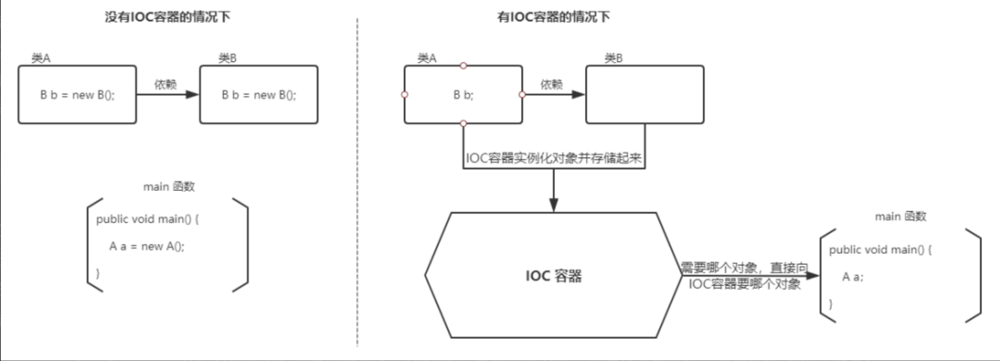
Why IOC?
- 对象之间的耦合度或者说依赖程度降低；
- 资源变的容易管理；比如你用 Spring 容器提供的话很容易就可以实现一个单例。
IOC in Spring（IOC在Spring框架中的实现）
利用反射技术，遵循工厂设计模式，通过外部配置文件生成对象，并将对象放入容器管理。

4.3.2 AOP原理
4.3.3 MVC原理
4.4 Spring启动过程
4.4.1 前置了解
在了解Spring启动过程之前，需要对Spring最核心组件ApplicationContext和IOC容器底层抽象定义BeanFactory有所了解。
ApplicationContext和BeanFactory都是Spring的抽象接口定义，其中ApplicationContext是BeanFactory的子类。具体关系如下图所示：
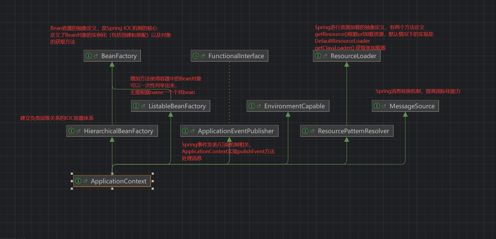
ApplicationContext
是Spring的主体，具备IOC、AOP、消息发布/订阅、消息源转换等功能。有几种不同的实现，这些实现分别通过不同的方式初始化一个Spring实例。（主要方式就两种，1.通过注解的方式初始化Spring，2.通过xml配置文件的方式初始化Spring。）
这里给出几种常用的ApplicationContext实现类
| 实现类 | 说明 |
|---|---|
| AnnotationConfigApplicationContext | 从一个或多个基于Java的配置类中加载上下文定义，适用于Java注解的方式 |
| ClassPathXmlApplicationContext | 从类路径下的一个或多个xml配置文件中加载上下文定义，适用于xml配置的方式 |
| FileSystemXmlApplicationContext | 从文件系统下的一个或多个xml配置文件中加载上下文定义，也就是说系统盘符中加载xml配置文件 |
| AnnotationConfigWebApplicationContext | 专门为web应用准备的，适用于注解方式 |
| XmlWebApplicationContext | 从Web应用下的一个或多个xml配置文件加载上下文定义，适用于xml配置方式 |
BeanFactory
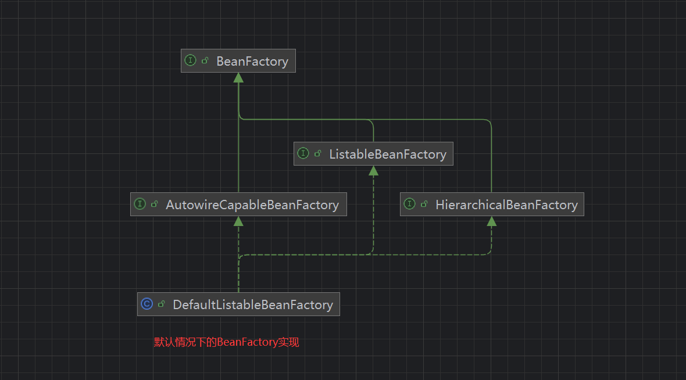
4.4.2 启动过程
编写代码，通过注解的方式启动一个Spring实例，观察启动过程。
首先定义两个服务组件，并要求一个要装配另一个。然后实例化一个AnnotationConfigApplicationContext，这个ApplicationContext的实现可以扫描一个package内的组件，完成Spring的创建。
1 | |
进入AnnotationConfigApplicationContext构造方法后，发现其中很简单，主要就是三个步骤：1. 初始化配置 2. 扫描目标package下的注解，登记这些注解 3. 根据这些注解完成Spring的初始化。
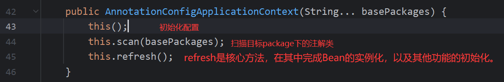
1.初始化配置
进入this()
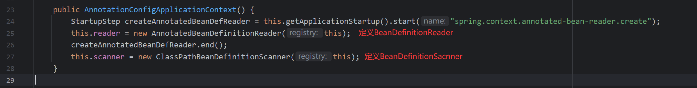
BeanDefinitionReader
从xml文件、类路径下使用了@Component系列注解的类、或者从@Configuration注解的配置类，获取BeanDefintiions，然后注册到BeanFactory中。BeanDefintiion其实就是对Bean的一些元数据定义，在扫描组件（第二步）的时候由BeanFactory实现保存进一个Map中，然后在refresh（第三步）中依据这些定义实例化出对象。
几种常见实现：
| 实现 | 说明 |
|---|---|
| XmlBeanDefinitionReader | 从XML文件读取定义 |
| AnnotatedBeanDefinitionReader | 通过注解读取定义 |
| ConfigurationClassBeanDefinitionReader | 基于@Configuration注解的类配置（这里注意区分其与AnnotatedBeanDefinitionReader的区别：AnnotatedBeanDefinitionReader是通过类上的组件注解如Service、Component等注册，而ConfigurationClassBeanDefinitionReader是通过@Configuration类内的例如@Bean注解注册） |
继续深入，看看BeanDefinitionReader是如何搞出来的：
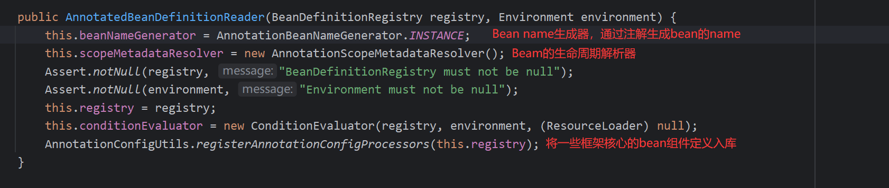
ClassPathBeanDefinitionScanner
指定一个扫描器组件，在对应ClassPath下扫描组件。
BeanDefinitionRegistry
ApplicationContext在初始化Reader和Scanner时，将自身作为BeanDefinitionRegistry传入了进去。
一个存放BeanDefinition的注册表,用于存储和管理所有的BeanDefinition。
2. 组件扫描
进入this.scan()，经过数层调用，最终调用了ClassPathBeanDefinitionScanner核心方法doScan
1 | |
3.refresh
是Spring核心方法，在这里完成容器的初始化，完成Bean对象的实例化，并初始化其他Spring组件。这里首先看refresh方法概况，然后在逐个简要分析这些方法。
1 | |
prepareRefresh
刷新前的预处理，调用 initPropertySources() 方法初始化一些属性设置，调用 getEnvironment().validateRequiredProperties() 校验属性的合法性，设置 earlyApplicationEvents= new LinkedHashSet() 保存容器中较早期的事件。
obtainFreshBeanFactory
获取 BeanFactory，创建一个刷新的 Bean 工厂，refreshBeanFactory() 并设置容器 ID，然后将创建的 DefaultListableBeanFactory 的对象进行返回。这里将ApplicationContext的ID关联到BeanFactory。
prepareBeanFactory
BeanFactory 的预准备工作，设置 BeanFactory 的类加载器和表达式解析器，并添加 BeanPostProcessor【ApplicationContextAwareProcessor】，设置自动装配的接口，添加 BeanPostProcessor。实例化几个基础单例，定义了环境信息以及环境启动必要的组件。
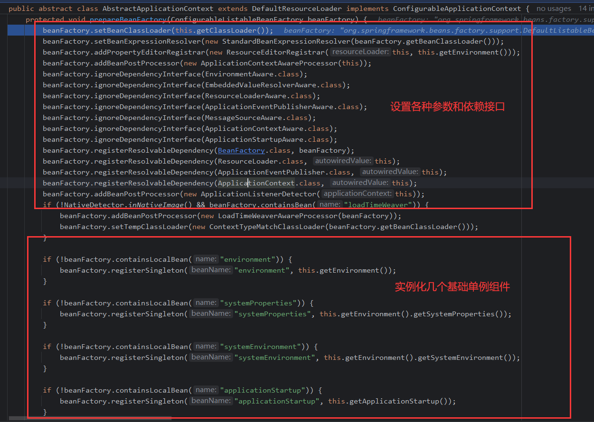
postProcessBeanFactory
BeanFactory 准备工作完成后进行的后置处理工作，子类通过重写这个方法来做进一步的设置。
registerBeanPostProcessors
注册 BeanPostProcessor（Bean 的后置处理器）,不同接口类型的 BeanPostProcessor 在 Bean 创建前后的执行时机是不一样的。
initMessageSource
初始化 MessageSource 组件， 做国际化功能、消息绑定、消息解析等。
initApplicationEventMulticaster
初始化事件派发器，如果容器中没有事件派发器，那么就创建一个 SimpleApplicationEventMulticaster 并添加到容器中。
onRefresh
留给子容器(子类)，例如在 springboot 中，用来创建 tomcat、jetty 容器并启动。
registerListeners
给容器中将所有项目里面的 ApplicationListener 注册进来，并将监听器注册到事件派发器中。
finishBeanFactoryInitialization
初始化所有剩下的单实例 bean，这个方法是核心方法，
4.5 Bean生命周期
Spring之Bean的生命周期_checkcandidate方法-CSDN博客
参考
面向对象及其五大基本编程原则[简洁易懂]_面向对象编程-CSDN博客
面向过程编程和面向对象编程的区别_面向对象编程和面向过程编程的区别-CSDN博客
字节面试杂谈——JAVA基础_character 缓存的范围是-CSDN博客
Spring 学习3--AOP（面向切面编程）_aop通配符含义-CSDN博客
软件工程概论---内聚性和耦合性_软件工程内聚和耦合-CSDN博客
深度解析Spring框架原理_spring框架原理及流程-CSDN博客
Spring的@ComponentScan注解用法介绍_java_脚本之家 (jb51.net)
Spring BeanFactory和ApplicationContext详解-CSDN博客
Spring系列 BeanDefinitionRegistry解读（超通俗易懂）-CSDN博客